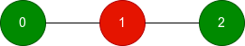
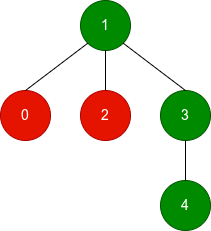

| Category | Difficulty | Likes | Dislikes |
|---|---|---|---|
| Algorithms | Hard | 38 | 1 |
microsoft
You are given an undirected tree with n nodes, numbered from 0 to n - 1. It is represented by a 2D integer array edges of length n - 1, where edges[i] = [ai, bi] indicates that there is an edge between nodes ai and bi in the tree.
You are also given an integer array good of length n, where good[i] is 1 if the ith node is good, and 0 if it is bad.
Define the score of a subgraph as the number of good nodes minus the number of bad nodes in that subgraph.
For each node i, find the maximum possible score among all connected subgraphs that contain node i.
Return an array of n integers where the ith element is the maximum score for node i.
A subgraph is a graph whose vertices and edges are subsets of the original graph.
A connected subgraph is a subgraph in which every pair of its vertices is reachable from one another using only its edges.
Example 1:

Input: n = 3, edges = [[0,1],[1,2]], good = [1,0,1]
Output: [1,1,1]
Explanation:
Example 2:

Input: n = 5, edges = [[1,0],[1,2],[1,3],[3,4]], good = [0,1,0,1,1]
Output: [2,3,2,3,3]
Explanation:
0, 1, 3, 4, which has 3 good nodes and 1 bad node, resulting in a score of 3 - 1 = 2.1, 3, 4, which has 3 good nodes, resulting in a score of 3.1, 2, 3, 4, which has 3 good nodes and 1 bad node, resulting in a score of 3 - 1 = 2.Example 3:
Input: n = 2, edges = [[0,1]], good = [0,0]
Output: [-1,-1]
Explanation:
For each node, including the other node only adds another bad node, so the best score for both nodes is -1.
Constraints:
2 <= n <= 105edges.length == n - 1edges[i] = [ai, bi]0 <= ai, bi < ngood.length == n0 <= good[i] <= 1edges represents a valid tree.